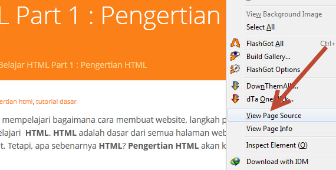

Ditulis oleh Rofi pada 29 Juli 2023
Jika anda ingin mempelajari bagaimana cara membuat website, langkah pertama adalah mempelajari HTML. HTML merupakan dasar dari semua halaman web yang kita lihat di Internet. Tetapi, apa sebenarnya HTML itu? dalam tutorial pertama Belajar HTML Dasar ini kita akan membahas Pengertian HTML.
HTML adalah singkatan dari Hypertext Markup Language. Disebut hypertext karena di dalam HTML sebuah text biasa dapat berfungsi lain, kita dapat membuatnya menjadi link yang dapat berpindah dari satu halaman ke halaman lainnya hanya dengan meng-klik text tersebut. Kemampuan text inilah yang dinamakan hypertext, walaupun pada implementasinya nanti tidak hanya text yang dapat dijadikan link.
Disebut Markup Language karena bahasa HTML menggunakan tanda (mark), untuk menandai bagian-bagian dari text. Misalnya, text yang berada di antara tanda tertentu akan menjadi tebal, dan jika berada di antara tanda lainnya akan tampak besar. Tanda ini di kenal sebagai HTML tag.
Jika anda ingin melihat bagaimana sebenarnya HTML, silahkan klik kanan halaman ini, lalu pilih View Page Source (di Browser Mozilla Firefox atau Google Chrome). Akan tampil sebuah halaman baru yang merupakan kode HTML dari halaman ini.
Jika anda merasa terintimidasi dengan kode-kode tersebut, anda tidak sendiri, saya juga mengalaminya. Namun, kita akan mempelajari sebagian besar kode-kode ini di Tutorial Belajar HTML di duniailkom.
HTML merupakan bahasa dasar pembuatan web. Disebut dasar karena dalam membuat web, jika hanya menggunakan HTML tampilan web terasa hambar. Terdapat banyak bahasa pemrograman web yang ditujukan untuk memanipulasi kode HTML, seperti JavaScript dan PHP. Akan tetapi sebelum anda belajar JavaScript maupun PHP, memahami HTML merupakan hal yang paling awal.
HTML bukanlah bahasa pemrograman (programming language), tetapi bahasa markup (markup language), hal ini terdengar sedikit aneh, tapi jika anda telah mengenal bahasa pemrograman lain, dalam HTML tidak akan ditemukan struktur yang biasa di temukan dalam bahasa pemrograman seperti IF, LOOP, maupun variabel. HTML hanya sebuah bahasa struktur yang fungsinya untuk menandai bagian-bagian dari sebuah halaman.
Selain HTML, dikenal juga xHTML yang merupakan singkatan dari eXtensible Hypertext Markup Language. xHTML merupakan versi lama dari HTML (sebelum era HTML5 seperti saat ini). xHTML menggunakan aturan penulisan yang lebih ketat. Jika anda menemukan artikel yang membahas xHTML, bisa disamakan dengan HTML, karena perbedaannya tidak terlalu banyak.
Saat ini versi terbaru dari HTML adalah HTML5. HTML5 berisi beberapa fitur baru, tapi tetap membawa mayoritas fitur dari versi HTML sebelumnya, yakni HTML 4 dan xHTML.
File HTML harus dijalankan dari aplikasi web browser. Dalam tutorial belajar HTML dasar selanjutnya, kita akan membahas tentang Fungsi web browser.